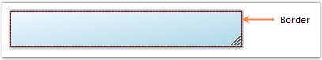

This section illustrates the border settings available for the StatusBarAdv control.
The border settings for the StatusBarAdv control can be set through the properties listed below.
|
StatusBarAdv Property |
Description |
|
Border3DStyle |
Indicates the style of the 3D border. The options included are as follows.
· RaisedOuter, · SunkenOuter, · RaisedInner, · SunkenInner, · Raised, · Etched, · Bump, · Sunken, · Adjust and · Flat. |
|
BorderColor |
Indicates the color of the 2D border. |
|
BorderSingle |
Indicates the 2D border style. The options included are as follows.
· Dotted, · Dashed, · Solid, · Inset, · Outset and · None.
The BorderStyle property should be set to 'FixedSingle'. |
|
BorderSides |
Indicates the border sides of the control. The options included are given below.
· Left, · Top, · Right, · Bottom, · Middle and · All. |
|
BorderStyle |
Indicates whether the panel should have a border. The options included are given below.
· FixedSingle, · Fixed3D and · None. |
 Note:
The BorderColor and BorderSingle properties will have effect only when
the BorderStyle property is set to 'FixedSingle'.
Note:
The BorderColor and BorderSingle properties will have effect only when
the BorderStyle property is set to 'FixedSingle'.
|
[C#]
this.statusBarAdv1.Border3DStyle = System.Windows.Forms.Border3DStyle.RaisedInner; this.statusBarAdv1.BorderColor = System.Drawing.Color.DarkRed; this.statusBarAdv1.BorderSingle = System.Windows.Forms.ButtonBorderStyle.Dashed; this.statusBarAdv1.BorderStyle = System.Windows.Forms.BorderStyle.FixedSingle; this.statusBarAdv1.BorderSides = System.Windows.Forms.Border3DSide.All; |
|
[VB.NET]
Me.statusBarAdv1.Border3DStyle = System.Windows.Forms.Border3DStyle.RaisedInner Me.statusBarAdv1.BorderColor = System.Drawing.Color.DarkRed Me.statusBarAdv1.BorderSingle = System.Windows.Forms.ButtonBorderStyle.Dashed Me.statusBarAdv1.BorderStyle = System.Windows.Forms.BorderStyle.FixedSingle Me.statusBarAdv1.BorderSides = System.Windows.Forms.Border3DSide.All |

Figure 1011: StatusBarAdv Control with Border Set
Note: The border of the StatusBarAdvPanels
can also be set to enhance the look and feel of the panels. See Border Settings topic under
StatusBarAdvPanel.